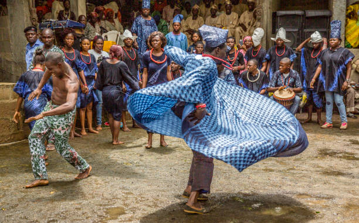
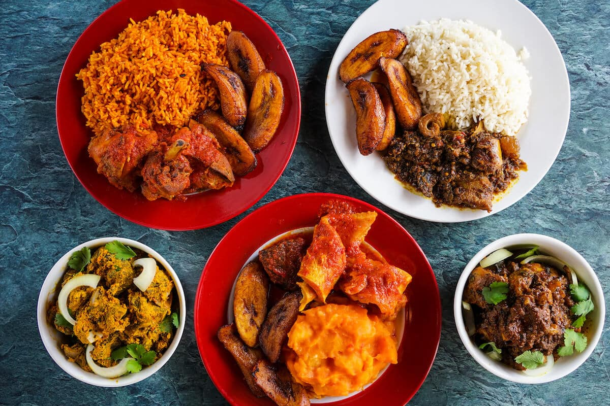

<<<<<<< HEAD
/*remove quirk mode
<!DOCTYPE html>
<html>

/*link the style.css
  <head> 
    <link rel="stylesheet" href="style.css">
  </head>

 <body class="first-body">

     <h1 id="page-title">
        TRENCHTOK
    </h1>
 </body>

  /* div to align images on the same line
  <div class="row">
    <div class="column">
       <div class="container">
         <div class="image-box">
           /*embed hyperlink in image
            <a href = "page1.html"> 
              
            </a>
         </div>
       </div>
    </div>

    <div class="column">
      <div class="containers">
         <div class="image-boxs">
          <a href = "page1.html"> 
           
          </a>
          </div>
      </div>
    </div>
  </div>

 /*creating hyperlinks on the first page
 <h2>
         DANCE 
 </h2>

 <h3>
     FOOD 
 </h3>
 
  /*third image div
  <div class="containerz">
    <div class="image-boxz">
     <a href = "page1.html"> 
      
     </a>
    </div>
  </div>

 <h4>
     MUSIC 
 </h4>

</html>
=======
